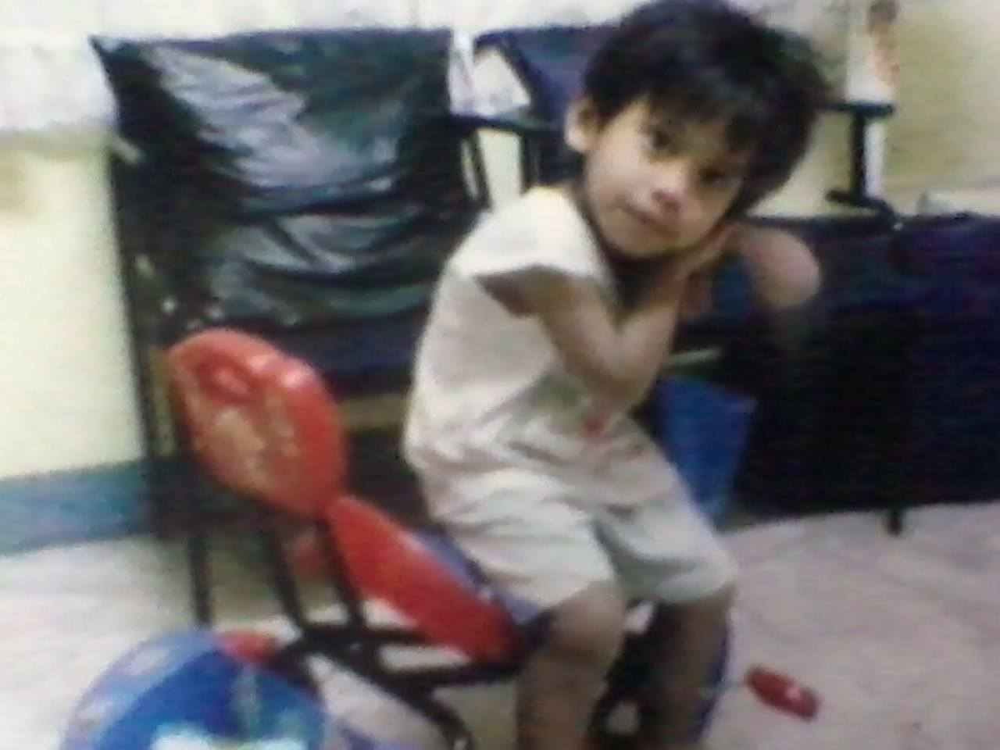

I even barely remember my toddler days but my parents told me that I learned to walk back in my 8 months
old. I also can't believe that I learned to walk early in those times, and as I see my cousins grow and
walk at their 11 months or the first year. I remember the mistakes I did when I was a child, that I slide
under the table and my tooth came out flying from my mouth and I am crying a lot. I also remember the time
that we have a dog that had 8 puppies, and those puppies is given away to my father's friends.
Back to the Main Page